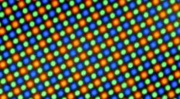

|
has its own chipset for processing display data and accurately picks the suitable display for the user.
|  |
made with amoled display which gives the best contrast ratios and more vivid colors. giving you a Higher definition of display and colors. |
|